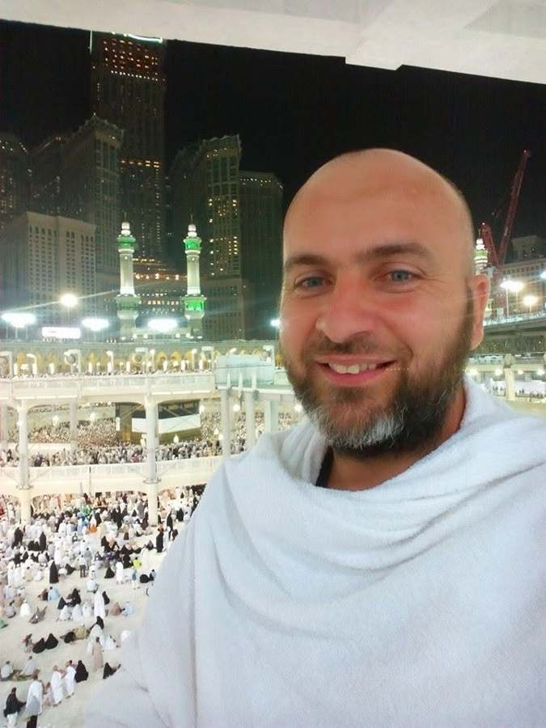

Salam alejkum iz casnog mjesta Medina - konacno smo malo dobili signala pa da koju sliku ubacimo, za pocetak cemo Seju u prvi plan staviti....
SARAJEVO → MEDINA
Hadž, septembar 2014.إِنَّا لِلَّٰهِ وَإِنَّا إِلَيْهِ رَاجِعُونَ
Eso, 1976 - 2015, Zavidovići
Naš spomenar za Esu. Njegove slike i njegove riječi, onako kako ih je sam zapisao.

Dan po dan, njegovim riječima.
Salam alejkum iz casnog mjesta Medina - konacno smo malo dobili signala pa da koju sliku ubacimo, za pocetak cemo Seju u prvi plan staviti....
Salam lijepi iz predivnog mjesta, iz dzamije Allahovog poslanika s.a.v.s.
Evo jos koja slika sa drustvom iz Zavidovica.
Braca iz Nigerije sa nasim hadzijama.
Iduci na sabah zapazi, u njih sve radnje (prodavnice, standovi) imaju sve ,,isti kljuc,,. Uvjerite se sami!!!
Friska slika, ulaz sa moje ulice u harem, ovako je sa svake strane, Ellhamdulilah. Sabah namaz.
I jos koja slika iznutra, eh kad bi svi muslimani ovako hrlili u dzemat, sigurno nas ne bi ovako lahko izlagali da budemo plijen pa cak i medjusobno...
Pokret iz Medine, tuzne brate hadzije! Nema insana da ne voli Medinu i da se nije zaljubio u njene ljepote.
Ihrami obuceni, Ellhamdulilah, via Mekka...
Odmor nadomak Mekke, obavljeni namazi i sada slijedeci korak ,,Casna Mekka,,
Ellhamdulilah obavljena umra, nakon mnogo umora sjedi se i uziva u pogledu na Ka'bu...
Jos koja prelijepa slika Ka'be, klanjaca, i ostalih ljepota harema i okolo....
Braca Kosovari!!!
Mina, predjena je prva etapa ka Arefatu. Nocas konak na Mini, ujutro ka Allahovom oprostu, Arefat. Nekoliko slika od ekipe koja je na Mini.
Mina!!!
Ellhamdulilah Arefat, ellhamdulillah, Allahu ekber...
Arefat zavrsen, Ellhamdulilah Allahovi robovi se vracaju ka Muzdelifi sa oprostom svog Gospodara. Svi koji su mi dali u emanet da dowim za njih, emanet je ispunjen. Jos jednom molim Allaha da sve dowe primi.
Jednostavni zivot u casnom gradu Mekki... nema milicije da pendreci, mozes da spavas i u parku.
Jednostavan zivot u Mekki, ako nemas hotel, stan, mozes i u parku zanocit, niko te nece ometati... Blago se ovim hadzijama, bez para, opskrbe, imetka dosli su da se odazovu Allahu na poziv... Nakon ovog ima li iko opravdanje!!!???
Zavidovicke hadzije....
Aerodrom Dzida, povratak hadzija kuci, cetvrti avion.
Ellhamdulilah nakon napornog putovanja hadzije stigle u Sarajevo. Avion br. 4, a tu su nase Zavidovicke hadzije.
Eh, sad kad disem nas zrak i koristim nas internet da ubacim malo vise slika!!!
„Salamim sve svoje prijatelje i bracu sa dowom Svevisnjem da vas pocasti sa onim sto je mene pocastio i da budete Njegovi gosti vec iduce godine.“
Eso, iz Medine2011 - 2014.
Svadba kod brata Fahre, Fahro udaje kcerku. Molim Allaha da im da svaki hajr i da ih spoji u dobru.
Beograd sinoc. Nasa braca Beogradska, hvala Allahu na dobroti kad omoguci da braca slobodno ispoljavaju Islam....
Makedonija/Skoplje....
Ako je neko zainteresovan za putovanje ka Ulcinju neka se javi. Ja putujem u nedjelju 24.08.2014. god. i ostajem do slijedeceg vikenda...
Evo malo slika sa danasnje partije....
Evo ih friske Igmanske!!!
Rijeka Gostovic je ozbiljno nabujala!!! Donosimo friske slike...
Prelijepa atmosfera na zadnjem iftaru...
Danasnje slike sa ( ) jezera. Pitanje o kom se jezeru radi???
Tu se nadje i moja malenkost. Zahvaljujemo se domacinima na gostoprimstvu sa dowom Svevisnjem da i njih On nahrani i napoji u dzenetu.
Ups bas je dobar!!!
Bas steta ne moze sve da se pojede..
MashAllah, draga nasa braca!!!
Druzenje brace (Sarajevo via Zavidovici), musafiri iz Sarajeva u zijaretu braci u Zavidovicima. Prelijepo iskustvo.
I jos zaboravljen detalj sa jucerasnjeg druzenja
Ko kaze da Eso nije bio na jezeru???
Zaista predivni dani, osim velike vrijednosti hadza, imao sam zaista predivno drustvo!!!
Malo proslogodisnjeg prisjecanja iz Turkey!!! Prosle godine na proputovanju kroz Srbiju
Huskici, Zavidovici
Dok je bio s nama.
Ima Ese, ama nema gdje ga nema, i neka ga, maašallah.
Sifet Ahmić, 2013.Allah te nagradio za ove utiske koje direktno šalješ, oživljavaš emocije.
Jasmin Bečirović, sa hadža 2014.Ostavljeno nakon što je preselio.
Kako je ovo bio hairli insan, duša me boli za njim. Molim Allaha da mu podari lijepi dženet.
Ibrahim Ike HodžićAllah da ga počasti najljepšim mjestom u Dženetu. Malo je insana da sam ih volio u ime Allaha kao njega. Molim Allaha da nas sastavi u Dženetu. Allahumme amin.
Ibrahim Ike HodžićAllah Uzvišeni da mu lijepi Džennet podari, a porodici snage i sabura, da se strpi, jer to nije kraj, mi ćemo se opet sresti i družiti, in sha Allah. Amin.
Nuraga, FojnicaO Allahu dragi, oprosti mu grijehe i podari mu Džennet firdevs. Amin ja Rabbi.
Behudin SinanovićAllahu, podari mu najljepša mjesta Dženneta. Amin.
Samedin TurbićNeka mu dragi Allah podari sve najbolje u Džennetu. Amin.
Hasan KeserovićAmin, da nas Allah dž.š. sve sastavi u firdeusu Dženetu.
Sejad SuljićInnalillahi we inna ilejhi radžiun.
Semin RizvićAllah jerhamhu. Allah mu se smilovao.
Zijad Hasanović„Ide dowa, molimo te o Svevisnji sastavi nas u dzenetu sve mu'mine.“
Eso, sa hadža 2014.
الفاتحة
Proučite Esadu El-Fatihu.
بِسْمِ اللَّهِ الرَّحْمَٰنِ الرَّحِيمِ الْحَمْدُ لِلَّهِ رَبِّ الْعَالَمِينَ الرَّحْمَٰنِ الرَّحِيمِ مَالِكِ يَوْمِ الدِّينِ إِيَّاكَ نَعْبُدُ وَإِيَّاكَ نَسْتَعِينُ اهْدِنَا الصِّرَاطَ الْمُسْتَقِيمَ صِرَاطَ الَّذِينَ أَنْعَمْتَ عَلَيْهِمْ غَيْرِ الْمَغْضُوبِ عَلَيْهِمْ وَلَا الضَّالِّينَ
Bismillahir-Rahmanir-Rahim. Elhamdu lillahi Rabbil-'alemin. Er-Rahmanir-Rahim. Maliki jewmid-din. Ijjake na'budu we ijjake neste'in. Ihdines-siratal-mustekim. Siratallezine en'amte alejhim, gajril-magdubi alejhim we led-dallin. Amin.
Molimo Uzvišenog da vas nagradi. Hvala vam što ste ga se sjetili.